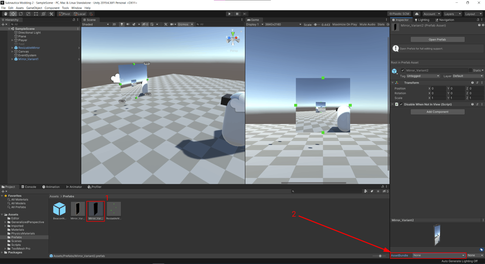
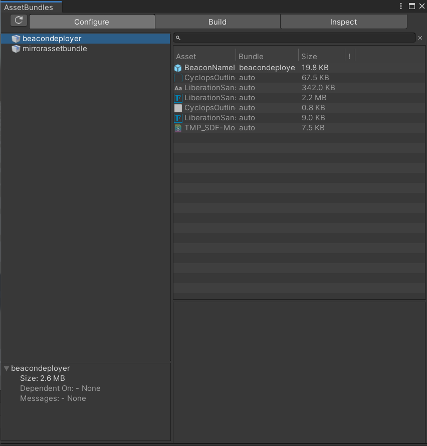
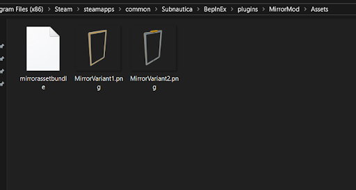

Asset Bundles Guide
This guide will show you how to convert and package custom files into the Asset Bundle format, which can easily be loaded by your mods.
You will learn how to take a file exported from a 3D modeling program (such as Blender) and turn it into a GameObject which can then be loaded by your mod.
Basic modding knowledge is required for this tutorial. Here are some things you will need to know:
- Basic modding and C# knowledge
- Basic knowledge of how to navigate the Unity game engine interface
The first thing you will need to do (Assuming you have a model already) is download the Unity Hub.
This is where you will get the Unity version you need to use to export your asset bundle.
The version Subnautica uses is 2019.4.36.
This is the same on Below Zero.
Here are the download links you will need:
- Unity hub: https://unity.com/download
- Unity version archive: https://unity.com/releases/editor/archive
Creating the Unity Project
Note
It's not necessary to make a new Unity project for each mod (individual projects are actually quite large), but for this tutorial we will be making a fresh project.
Once you've installed both, open Unity hub and click "New Project" from the top right.
Next, follow these steps:
- Verify your Unity version is correct.
- Select 3D core from the template list.
- Configure your project name and location.
- Click on "Create Project."

Note
If you get the error "Failed to resolve project template", follow these steps:
- Locate where your editor is. You can do that by opening Unity Hub, going to Installs, and then right clicking on the version in question and clicking "Show in Explorer."
- Go to
Editor\Data\Resources\PackageManager\ProjectTemplates. You will find two files,manifest.jsonandUnityLicense.json. Delete them both. - Kill Unity Hub in your task manager and open it again.
You should now be able to create your project!
The Unity editor will now open. This may take a while.
Installing the Asset Bundle Browser
Once the editor has opened, click on Window at the top of the editor, and then click Package Manager.
Click on the dropdown at the top left and select Unity Registry if not on it already.
Search for "Asset Bundle Browser" and install it.
Creating the Prefab
Once the editor is open, drag your model from your file manager into the Scene window. You can either click on your model in the scene window or in the hierarchy on the left to select it.
If you need to, you may place your model under an empty GameObject (in the editor, GameObject -> Create Empty) to apply any necessary model scaling and to separate it from any other children. Constructable prefabs (aka base modules) specifically REQUIRE the model object to be separate from the entire prefab as an individual child object.
Next, drag your model from the hierarchy on the left into the Project section at the bottom.
This will create what is called a Prefab. It can be instantiated (created/spawned) multiple times, but they are all copies of the original.
Editing the Prefab and Adding Components
To edit the prefab, double click on it in the Project window.
You can add components to the prefab by clicking "Add Component" in the inspector on the right.
One example of a component is a Rigidbody, which can apply physics to your Prefab.
Keep in mind, however, that every (non-kinematic) Rigidbody requires a WorldForces component to work properly, which must be added either through code or with a tool such as Thunderkit.
Any components you add will be included in the AssetBundle.
Caution
You should not, however, add scripts to your prefab that you made in the editor!
The AssetBundle will not link them to the scripts in your modding project and you will get errors.
Assigning the Asset Bundle
Next, follow these steps to assign an asset bundle to your prefab.
- After all your prefab configuration is done, select it in the
Projectwindow. - Click on "Asset Bundle" in the bottom right of the Inspector.
Here you can either assign your prefab to an existing AssetBundle or create a new one.

Exporting the Asset Bundle
Once you've assigned your AssetBundle, open the Asset Bundle Browser (Window → AssetBundleBrowser at the top of the editor).
Here you can see all the assets that will be put into your AssetBundle.

Click on the build tab, and change the Build Target to "Standalone Windows" if it isn't already.
You can also configure the Output Path of the build.
After all that is set, click Build.
Once your AssetBundle is built, move the built file to the location of your mod in the Plugins folder.
It's generally prefered to put them inside a folder named "Assets", but that isn't necessary.

Now the hard part is done! All you need to do is load it within your mod's code.
Referencing the AssetBundleModule
Warning
If you are using the Nautilus template or have installed the Nautilus NuGet package, skip this step.
The template and package include all the UnityEngine references already, so referencing them twice may cause errors.
The first thing you will need to do is add the UnityEngine.AssetBundleModule.dll as a reference in your IDE (Assuming you don't already have it referenced).
- Open your project tab and right click on References.
- Select
Add Reference. - Click Browse, and navigate to
[Game Location]/Subnautica_Data/Managed, and addUnityEngine.AssetBundleModule.dllas a reference. - Click
Okto close the window.

Using the Asset Bundle
Note
The way you load assets from the Asset Bundle will depend on if you're using Nautilus or not.
Here's some example code of how you can load in your prefab:
using BepInEx;
using System.IO;
using System.Reflection;
using UnityEngine;
namespace Examples
{
internal class AssetBundles : BaseUnityPlugin
{
// Usually this is done in your Plugin script but technically you can do it wherever
public static AssetBundle MyAssetBundle { get; private set; }
// This gets the path to the "Assets" folder inside my plugin folder
// If you don't have an assets folder you can replace "AssetsFolderPath" with Assembly.GetExecutingAssembly().Location
// That just gets the path to the .dll of the mod
public static string AssetsFolderPath = Path.Combine(Path.GetDirectoryName(Assembly.GetExecutingAssembly().Location), "Assets");
private void Awake()
{
// Keep in mind that the assetbundle can only be open in one place at a time, so keep a reference
MyAssetBundle = AssetBundle.LoadFromFile(Path.Combine(AssetsFolderPath, "myAssetBundle"));
// This name needs to be the exact same name as the prefab you put in the bundle
GameObject mirrorVariant1 = AssetBundle.LoadAsset<GameObject>("myGameObject");
}
}
}
Using the Imported Asset
And just like that you have your prefab in your code!
To use a GameObject from your Asset Bundle in a Nautilus prefab, simply write
myCustomPrefab.SetGameObject(myAssetBundleGO);
Instead of using a prefab template.
For more complicated prefabs (such as buildables), you can create your own method that loads the prefab from the asset bundle and applies extensive modifications to it.
You can also apply changes to the prefab directly.
E.g., myAssetBundleGO.AddComponent<WorldForces>();
Here is one example of how to use an Asset Bundle GameObject in a custom prefab:
using Nautilus.Assets;
using Nautilus.Assets.Gadgets;
using Nautilus.Crafting;
using Nautilus.Utility;
using UnityEngine;
using Ingredient = CraftData.Ingredient;
namespace ExamplePrefab
{
internal static class MyCoolPrefab
{
public static PrefabInfo MyPrefabInfo { get; private set; }
public static void Patch()
{
PrefabInfo prefabInfo = PrefabInfo.WithTechType("MyCoolPrefab", "My Cool Prefab", "Pretty cool, right!")
.WithIcon(SpriteManager.Get(TechType.Titanium));
// Just using the Titanium sprite as a placeholder
// Cache the tech type for use in other places
MyPrefabInfo = prefabInfo;
var prefab = new CustomPrefab(prefabInfo);
// Create the recipe
RecipeData recipe = new RecipeData
{
craftAmount = 1,
Ingredients =
{
new Ingredient(TechType.Titanium, 2),
new Ingredient(TechType.CopperWire, 2),
},
};
// Set the prefab GamrObject to the result of the GetAssetBundlePrefab method
prefab.SetGameObject(GetAssetBundlePrefab());
// Using the Seaglide as a placeholder unlock
prefab.SetUnlock(TechType.Seaglide);
// Set the recipe
prefab.SetRecipe(recipe)
.WithCraftingTime(6f);
// Add the prefab to the Miscellaneous tab of the blueprints in the PDA
prefab.SetPdaGroupCategory(TechGroup.Miscellaneous, TechCategory.Misc);
// Register the prefab to the Nautilus prefab database
prefab.Register();
}
private static GameObject GetAssetBundlePrefab()
{
GameObject myCoolPrefab = assetBundle.LoadAsset<GameObject>("myCoolPrefab");
// The classID is the same as the one we put into the PrefabInfo.WithTechType up above
// The LargeWorldEntity.CellLevel determines how far away the object will be loaded from the player
PrefabUtils.AddBasicComponents(myCoolPrefab, MyPrefabInfo.ClassID, MyPrefabInfo.TechType, LargeWorldEntity.CellLevel.Medium);
// Makes the GameObject have the correct shaders
// You can use the optional inputs here to change the look of your object
MaterialUtils.ApplySNShaders(myCoolPrefab);
// Allows the object to be picked up
myCoolPrefab.AddComponent<Pickupable>();
// Return the GameObject with all the components added
return myCoolPrefab;
}
}
}
There are endless possibilities with Asset Bundles, so don't hesitate to experiment!
If you have more questions about Asset Bundles, feel free to ask in the modding channels of the modding Discord.